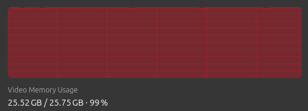
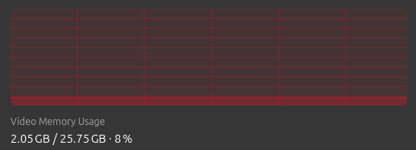

Caching Memory Allocator
Julia uses Garbage-Collection (GC) for automatic memory management. However, it does not know about other memory spaces, therefore it sees no difference between 1 KiB GPU allocation and 1 GiB and doesn't free it in time.
This leads to a situations where all of the GPU memory is used, even though your algorithm only requires a fraction of it.
Current mechanism of dealing with OOM (Out-Of-Memory) errors during allocations is to manually trigger GC and retry allocating again doing this in several rounds each more aggressive than previous.
However, manually triggering GC is very expensive, since it requires scanning all Julia objects, not just ROCArrays, so the actual memory freeing takes a fraction of GC time: 
On the image above, red region is a call to GC and green region is where actual GPU memory is being freed.
To help with memory management, we can use caching memory allocator. It is usefult in scenarios where we execute the same function multiple times and have the same memory allocation pattern. One such example is training DL models, where given the model and its parameters we compute loss, gradients w.r.t. loss and perform in-place parameter update. In this case, every iteration performs same operations and memory allocations and with caching allocator we can efficiently re-use them without returning the memory back to OS.
Example
We have a for-loop, where each iteration requires 2 GiB of VRAM. We create a caching allocator with the name :loop and pass a function to execute. First iteration will allocate, but subsequent won't.
using AMDGPU
function main()
n = 1024^2 * 256
for i in 1:1000
AMDGPU.with_caching_allocator(:loop, n) do n
sin.(AMDGPU.rand(Float32, n)) # 2 GiB allocation
return
end
end
endThe reason for marking a region of code where to re-use the memory and not extending it to the whole program instead, is because we cannot rely on GC to tell us when the memory is no longer used (it is too slow for that), so we create such region manually.
You can free all memory held by allocator, by invalidating it using its name with AMDGPU.invalidate_caching_allocator!. Or if you want some region of code within AMDGPU.with_caching_allocator to execute without relying on cache, use AMDGPU.with_no_caching.
| Without Caching Allocator | With Caching Allocator | |
|---|---|---|
| VRAM Usage |  |  |
| Execution time (seconds) | 12.865149 | 0.020943 |
API
AMDGPU.with_caching_allocator — Functionwith_caching_allocator(f, alloc_name::Symbol, args...)Execute function f with arguments args... using caching allocator given by its name alloc_name.
All GPU memory allocations will attempt to hit this cache before doing actual allocation (in case of cache miss). After executing f, all "busy" memory within the allocator is marked as free, so it can be re-used with the next call.
Returns
Result of the f function.
AMDGPU.with_no_caching — Functionwith_no_caching(f)Execute function f, but avoid hitting any caching allocator. This is useful to call from within with_caching_allocator, so that the memory is independent from it.
Returns
Result of the f function.
AMDGPU.invalidate_caching_allocator! — Functioninvalidate_caching_allocator!(alloc_name::Symbol)Free all memory held by caching allocator given by it name alloc_name.